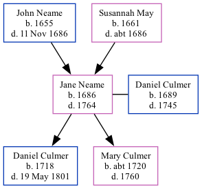

The child of John Neame and Susannah MayJane Neame, the 7 times great-grandmother of Nigel Horne, was born in Eastry, Kent, England in 16861, was baptised there on 7 Sept 1686 and was orphaned in 1686 by the death of both parents in that year her.
She married Daniel Culmer (with whom she had 2 children: Daniel and Mary) there at St Mary The Virgin's Church, Church St, on 10 Jun 17143
She died in 1764 in Stourmouth, Kent, England2 and was buried in Preston, Kent, England on 4 Nov 1764 (St. Mildred's Church)2.
Kent, England, Tyler Index to Parish Registers, 1538-1874 Online publication - Provo, UT, USA: Ancestry.com Operations, Inc., 2010. This collection was indexed by Ancestry World Archives Project contributors.Original data - Frank Watt Tyler. The Tyler Collection. Canterbury, Kent, England: The Institute of Herald
Public Member Trees Online publication - Provo, UT, USA: The Generations Network, Inc., 2006.Original data - Family trees submitted by Ancestry members.Original data: Family trees submitted by Ancestry members.
England Marriages 1538-1973 - Findmypast
Family Tree

Map
Generated by ged2site. Last updated on Feb 19, 2025